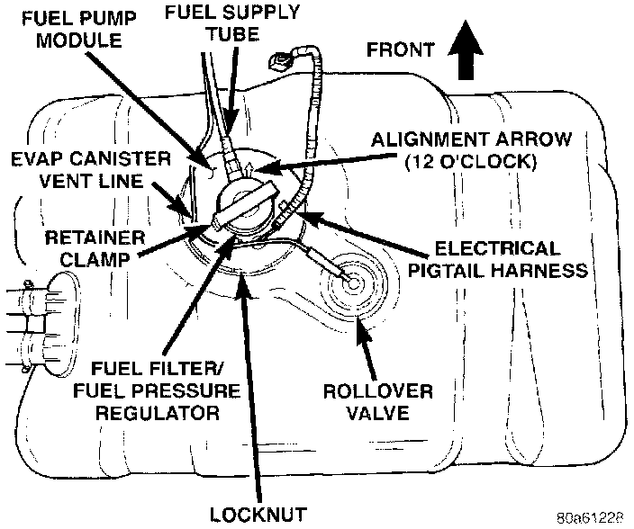
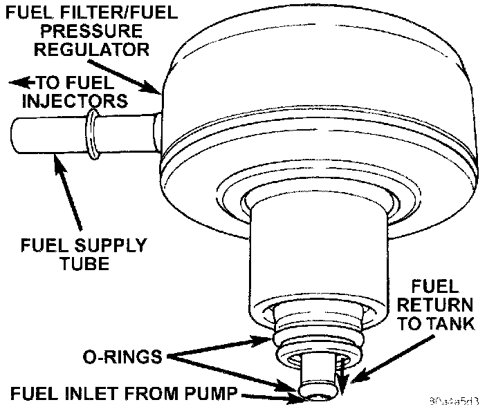

Fuel Filter: Description and Operation
FUEL FILTER/FUEL PRESSURE REGULATORFig. 1 Fuel Tank/Pump Module (Top View):

A combination fuel filter and fuel pressure regulator is used on all engines. It is located on the top of fuel pump module (Fig. 1). A separate frame mounted fuel filter is not used with any engine.
Fuel Pressure Regulator Operation: The pressure regulator is a mechanical device that is not controlled by engine vacuum or the Powertrain Control Module (PCM).
The regulator is calibrated to maintain fuel system operating pressure of approximately 339 kPa +/- 34 kPa (49.2 psi +/- 5 psi) at the fuel injectors. It contains a diaphragm, calibrated springs and a fuel return valve. The internal fuel filter is also part of the assembly.
Fig. 3 Fuel Filter/Pressure Regulator:

Fuel is supplied to the filter/regulator by the electric fuel pump through an opening tube at the bottom of filter/regulator (Fig. 3).
The regulator acts as a check valve to maintain some fuel pressure when the engine is not operating. This will help to start the engine. A second check valve is located at the outlet end of the electric fuel pump. Refer to Fuel Pump-Description and Operation for more information. Also refer to the Fuel Pressure Leak Down Test and the Fuel Pump Pressure Tests.
If fuel pressure at the pressure regulator exceeds approximately 49 psi, an internal diaphragm closes and excess fuel is routed back into the tank through the pressure regulator. A separate fuel return line is not used.